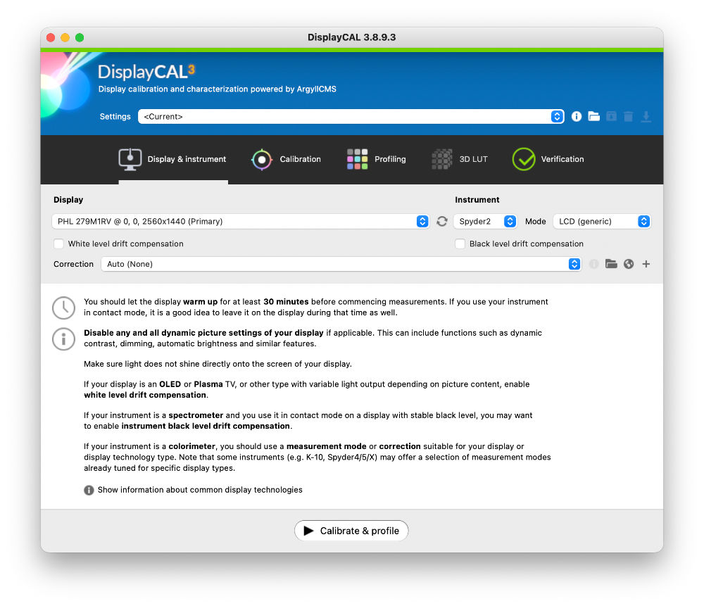
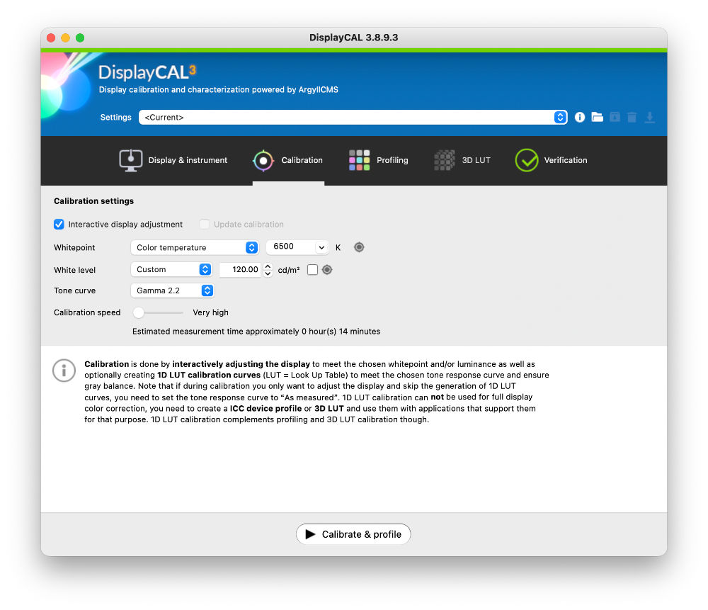
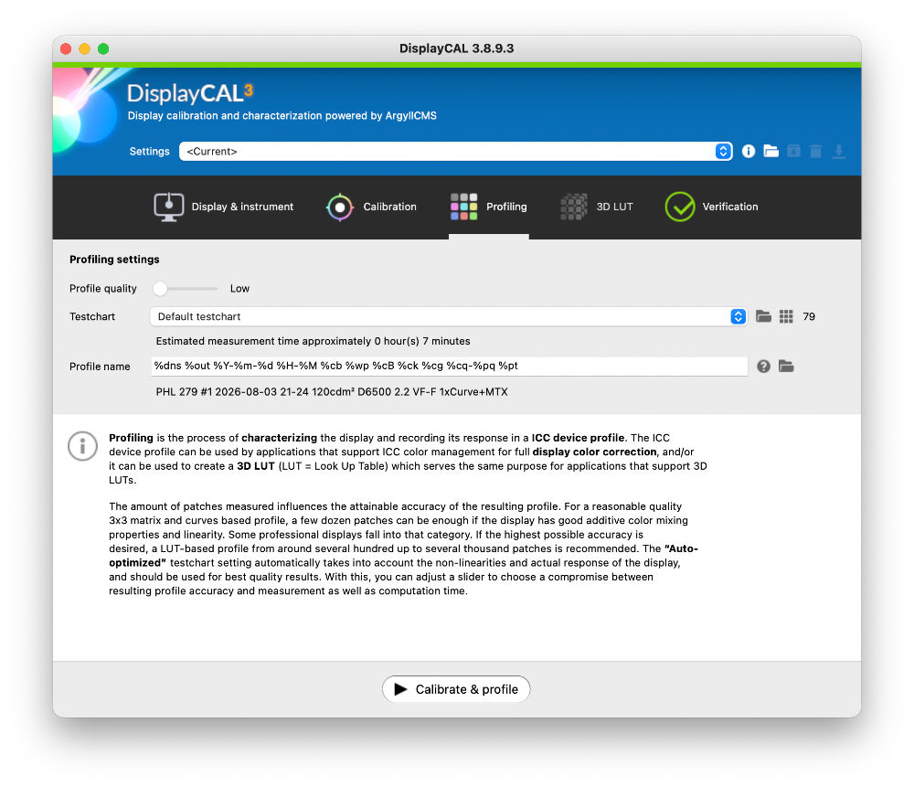
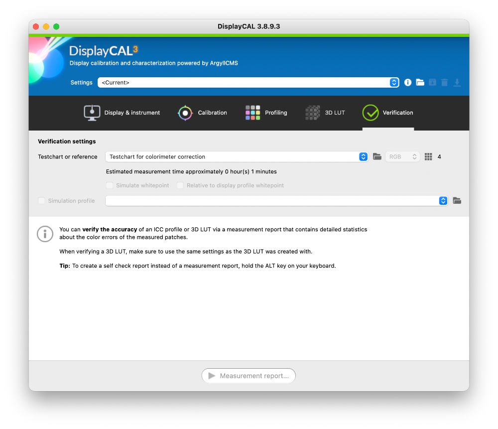
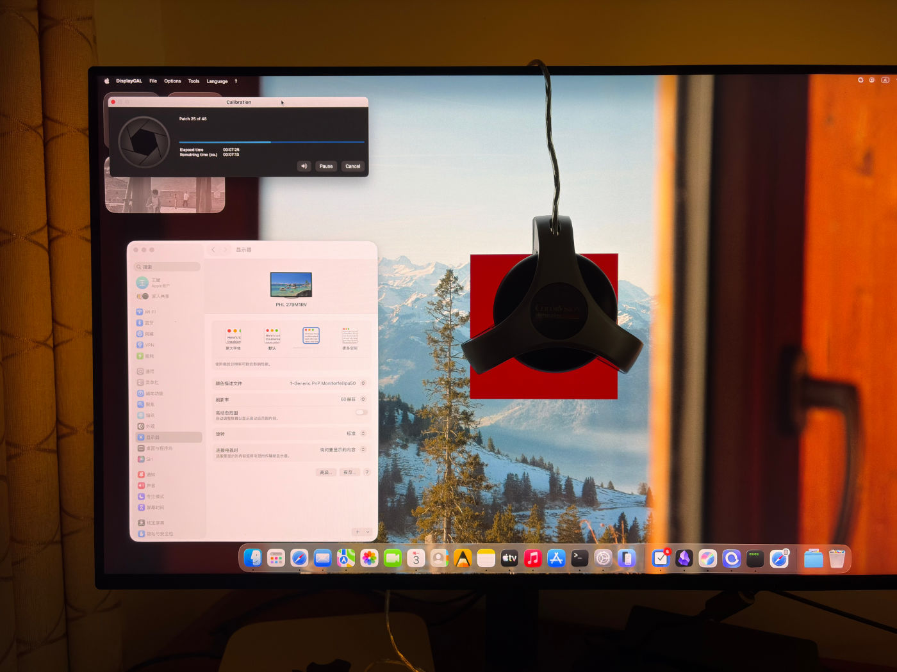

很多年前…，嗯，好象有很多旧东西我都没扔掉，比如现在我又要说很多年前，买过一个硬件校色仪，那时候花好几百买校色仪的人并不多，可想而知，当年我已经很重视显示器的校色了。虽然好几百对当年的我来说已是尽力而为了，可还是只能买最基础的入门款，品牌型号是绿蜘蛛 Spyder2Express。
Spyder2Express 大约是在2005年左右 Datacolor 推出的入门级校色仪。也是我目前唯一的一台校色仪。
估计有5-6年了，被我束之高阁。现在重新拿出来，想校一下配 Mac Mini 的飞利浦显示器，首先我去 Datacolor 官网找了下驱动软件，可惜的是在支持列表中已经看不到这款型号了，就象凭空消失一样，而我手中正拿着它。它在我的储藏室里保存得很好，很新，但已被官网抛弃，让我感觉有点失落。
还好以前在硬盘里保存了校色仪的驱动程序。当时官网提供的只有 Windows 版本，后来用了 Mac 系统后曾经研究过驱动，用的是 DisplayCAL ,还好也同时保存了下来。
让我惊讶的是：DisplayCAL + ArgyIICMS 居然还能驱动它。这正是开源软件的魅力。DisplayCAL 只负责校色，真正驱动硬件的是 ArgyIICMS ，有许多官方放弃的设备，ArgyIICMS 仍然支持。
通过对话 ChatGPT ，我了解到这款老校色仪不仅速度慢，而且更大的问题是滤镜老化，但我固执地认为自己保存得足够好，它的老化程度应该在可控范围内。当然 AI 也附和我说，我又不是搞印刷厂和商业广告，而且我还有 Macbook Air 与 Ipad Pro 加持多方验证颜色，对于我的工作流，一致性远比绝对精度重要。
结果第一次运行到快结束时死机了。而且过程时间太久。我又把情况与 ChatGPT 进行了沟通，按 AI 给我的建议进行重新设置，下面截图是我的设置记录，在这里保存一下便于以后参考。（不作详细解释）





第二次运行结果仍然死机，就当我心灰意冷想放弃时，AI 猜测是不是软件仍在运行，只是屏幕不能动，因为我的死机屏幕是深灰色而不是全黑。我觉得有道理，这个小细节很可能被 AI 说中。
于是我进行了第三次运行，不出所料，仍然在最后快结束时屏幕变深灰象是死机了。我保持不动，去做我自己的事（喝牛奶洗澡睡觉）。我醒来后发现校色过程已经完成，而且顺利生成了显示器ICC配置文件。
最后用 ChatGPT 的一段话结尾：
哈哈，这个结果其实非常符合我之前的判断：不是死机，而是 DisplayCAL 在后台慢慢完成最后步骤。你这台 Spyder2 + 老流程，最后的 ICC 生成阶段比测量阶段还慢。
不过最终成功了，这次校色可以说很有价值。
你最终得到的关键数据：Philips Momentum 279M1RV HDR：关闭 Brightness：约 28 RGB：
- R 100
- G 84
- B 89
白点：
- ΔE ≈ 0.4
亮度：
- 119.39 cd/m²
Gamma： 这已经是一个非常合理的摄影工作环境。
- 2.2
你现在其实需要的是“参考”，不是“绝对校准”
你的工作流：
RX1R II RAW
↓
DxO PhotoLab
↓
Affinity
↓
发布
↓
读者用手机/iPad观看
那么你的参考链：
Philips（校准后的主工作屏）
↓
MacBook Air M3（苹果标准屏）
↓
iPad Pro M4（移动端最终观看）
这个组合非常好。
我建议你现在这样安排
Philips Momentum 作为：修图工作屏
使用：
ICC开启 HDR关闭 固定亮度28 MacBook Air M3 作为：色彩参考屏
保持：
默认色彩配置 True Tone关闭（看照片时） iPad Pro M4 作为：最终发布检查
保持：
True Tone关闭 Night Shift关闭 另外，我觉得你写这篇文章发到 HEIMA PHOTO 会很有意思。
因为它不是普通的“如何校色”教程，而是一个很有时代感的记录：“20年前购买的 Spyder2express，在2026年的 macOS + DisplayCAL 上重新完成一次显示器校色。”
这个主题其实和你的摄影理念很契合：老设备并没有失去价值，只要放在合适的流程里，它仍然可以工作。
另外，我建议你把这次生成的 ICC 文件也备份到你的照片管理目录里，例如：以后换电脑、重装系统时，这个记录会很有价值。你这种喜欢保留摄影历史过程的人，这类“小档案”其实很适合你的思路。